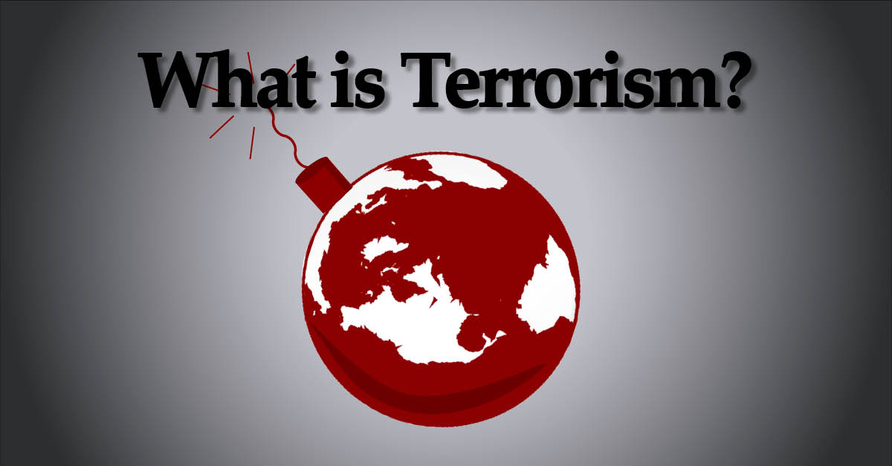

BASIC INFORMATION ABOUT TERRORISM
It might seem like terrorism is a new phenomenon, but in reality it’s existed for 2000 years. Terrorism is the use or threat of violence that aims to spread fear in a population, and to advance a political, ideological or religious cause. It’s important to understand that not all violent acts are terrorist acts. Terrorism is more of a strategy than just a random act of violence, as it always includes some sort of political, ideological or religious motivation on the part of the perpetrators. The reasons behind why a group or individual would carry out a terrorist act vary.
Terrorist groups use violence and threats of violence to publicise their causes and as a means to achieve their goals. They often aim to influence or exert pressure on governments and government policies but reject democratic processes, or even democracy itself. |
 |
Terrorism can be motivated by religious extremism, as seen in the rise of Islamist terrorism since the attacks on the World Trade Center in New York in 2001. Religiously motivated terrorism has also been carried out in the name of Christianity. The 2011 terrorist attack in Norway and several attacks on clinics in the US were motivated by religious extremism and by an opposition to women’s rights.Terrorism can also be motivated by political views, which may overlap with religious reasons. For example, the 1995 Oklahoma City bombings were carried out to send a message to the US government about FBI operations. |